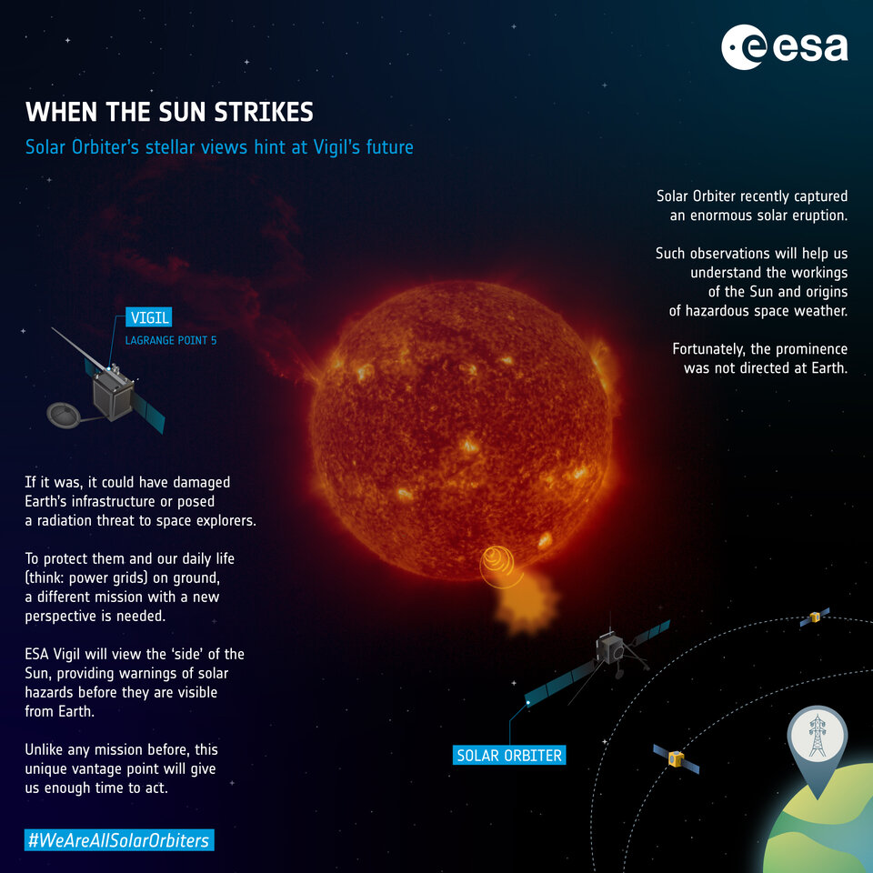
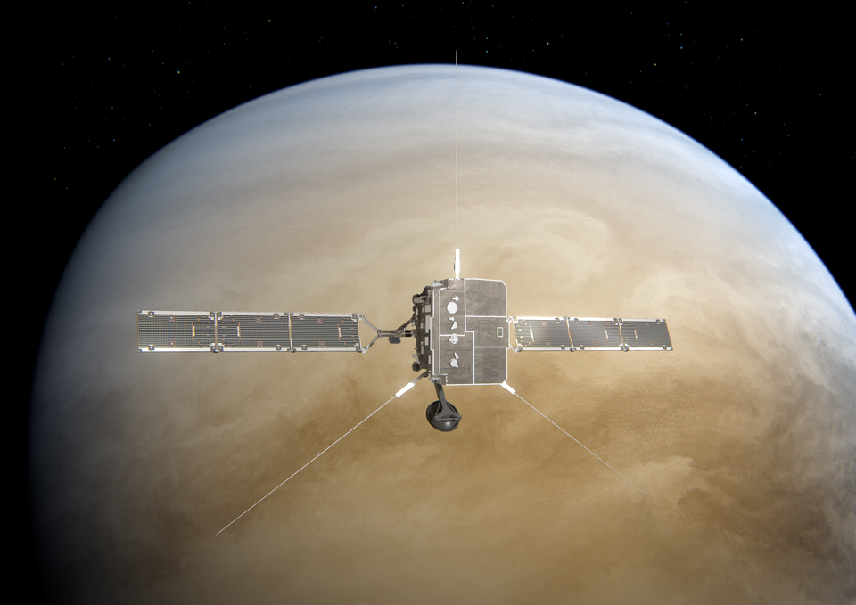
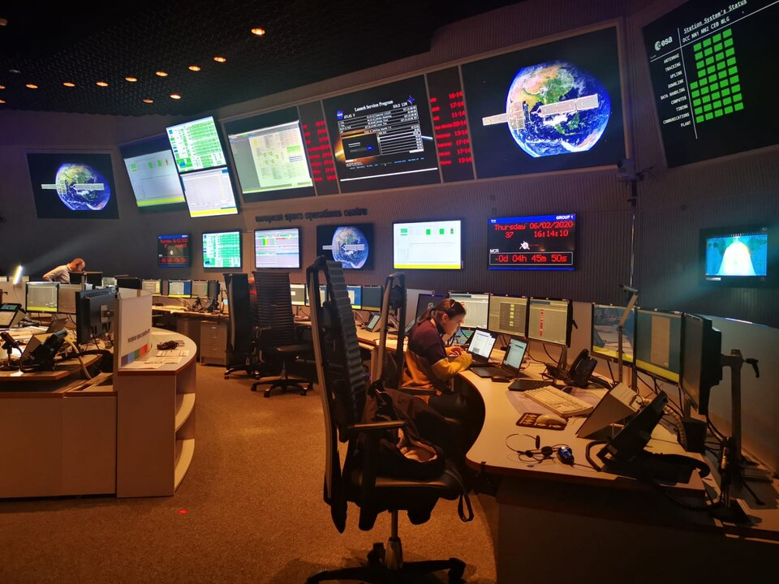
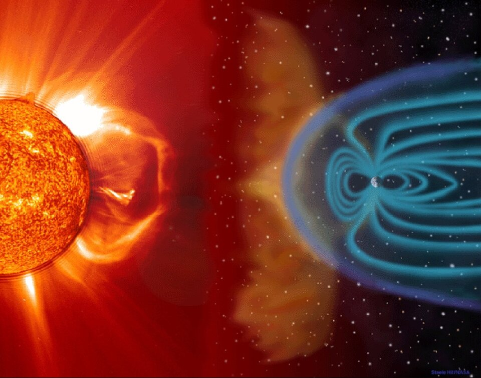
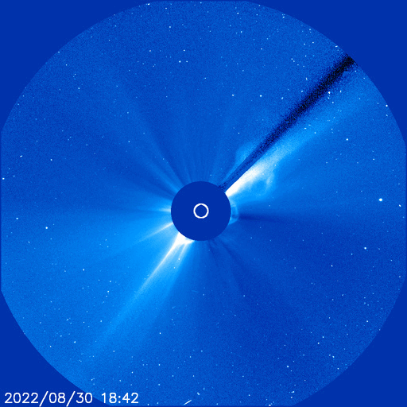

Ejeção de massa Coronal atinge Solar Orbiter antes de sobrevoar Vênus
Publicado por Roni Wellington 21-09-2022 | Astronomia Em resumo
Nas primeiras horas do domingo, 4 de setembro, o Solar Orbiter voou por Vênus para uma manobra de assistência à gravidade que altera a órbita da espaçonave, aproximando-a ainda mais do Sol. Como se tentasse chamar a atenção do orbitador enquanto se aproximava de outro corpo no Sistema Solar, o Sol lançou uma enorme ‘ejeção de massa coronal’ diretamente na espaçonave e no planeta apenas dois dois dias antes de sua aproximação mais próxima – e os dados são reveladores.
Aprofundado
Em 30 de agosto, uma grande ejeção de massa coronal disparou do Sol na direção de Vênus. Não muito tempo depois, a tempestade chegou ao segundo planeta do Sol. À medida que os dados continuam a chegar do Solar Orbiter, este ataque revela por que o monitoramento ‘in situ’ do clima espacial e seus efeitos nos corpos e espaçonaves do Sistema Solar são tão importantes.
-- Sobrevôo da Solar Orbiter Vênus
Felizmente, não houve efeitos negativos na espaçonave, pois o observatório solar da ESA-NASA foi projetado para resistir e, de fato, medir explosões violentas de nossa estrela-embora Vênus nem sempre saia tão facilmente. As ejeções de massa coronal têm a tendência de erodir a atmosfera de Vênus, removendo os gases à medida que passam.
Voe alto com Vênus, voe por aí
O Solar Orbiter está a um quarto do caminho de sua missão de uma década para observar o Sol de perto e dar uma olhada em seus misteriosos pólos. Sua órbita foi escolhida para estar em estreita ressonância com Vênus, o que significa que ele retorna à vizinhança do planeta a cada poucas órbitas para usar sua gravidade para alterar ou inclinar sua órbita.
-Até agora , o Solar Orbiter esteve confinado ao mesmo plano dos planetas, mas a partir de fevereiro de 2025, cada encontro com Vênus aumentará sua inclinação orbital, fazendo com que ele ‘salte’ do plano do Sistema Solar para obter uma visão das misteriosas regiões polares do Sol
Este terceiro sobrevôo de Vênus ocorreu no domingo às 01:26UTC, quando o Solar Orbiter passou a 12.500km do centro do planeta, que fica a aproximadamente 6.000km de sua ‘superfície’ gasosa. Em outras palavras, passou a uma distância de metade da largura da Terra.
Sua distância de Vênus, ângulo de aproximação e velocidade foram meticulosamente planejados para obter o efeito exato desejado da grande atração gravitacional do planeta – aproximando-o do Sol como nunca antes.
--Equipe de controle de voo da Solar Orbiter durante simulações de pré-lançamento em 2020
“A aproximação ocorreu exatamente como planejado, graças ao grande planejamento de nossos colegas da Flight Dynamics e ao cuidado diligente da Equipe de Controle de Voo”, explica Jose-Luis Pellon-Bailon, gerente de operações da Solar Orbiter.
“Ao negociar ‘energia orbital’ com Vênus, o Solar Orbiter usou a gravidade do planeta para mudar sua órbita sem a necessidade de massas de combustível caro. Quando retornar ao Sol, a aproximação mais próxima da espaçonave será cerca de 4,5milhões de km mais perto do que antes”
Entendendo as partículas que representam um risco de radiação
Os dados transmitidos desde que o Solar Orbiter encontrou a tempestade solar mostram como seu ambiente local mudou à medida que o grande CME passou. Enquanto alguns instrumentos tiveram que ser desligados durante sua aproximação de Vênus, a fim de protegê-los da luz do sol refletida na superfície do planeta, os instrumentos ‘in situ’ do Solar Orbiter permaneceram ligados, registrando, entre outras coisas, um aumento nas partículas energéticas solares.
-- A conexão Sol-Terra
Partículas, principalmente prótons e elétrons, mas também alguns átomos ionizados como o hélio, são emitidos pelo sol o tempo todo. Quando explosões particularmente grandes e ejeções de plasma são disparadas do Sol, essas partículas são apanhadas e carregadas com elas, aceleradas a velocidades quase relativísticas. São essas partículas que representam um risco de radiação para astronautas e espaçonaves.
Melhorar nossa compreensão dos CMEs e acompanhar seu progresso à medida que passam pelo Sistema Solar é uma grande parte da missão do Solar Orbiter. Ao observar as CMEs, o vento solar e o campo magnético do Sol, os dez instrumentos científicos da espaçonave estão fornecendo uma nova visão sobre como funciona o ciclo de 11 anos da atividade solar. Em última análise, essas descobertas nos ajudarão a prever melhor os períodos de clima espacial tempestuoso e a proteger o planeta Terra das explosões violentas do Sol.
Adeus, auréola
Este CME recente ilustra uma dificuldade nas observações do clima espacial. Como visto nesta filmagem do SOHO, um ‘halo completo’ é visível quando um CME está vindo direto para a terra ou, neste caso, indo diretamente para longe, do ‘lado mais distante’ do Sol.
-- SOHO captura ejeção de massa coronal explodindo do outro lado do Sol na direção de Vênus
Determinar se as ejeções de massa coronal estão vindo em direção à Terra ou se afastando é complicado quando visto da Terra, porque em ambos os casos parece estar se expandindo. Um dos muitos benefícios da próxima missão Vigil é que, combinando as imagens tiradas da direção da Terra e a posição de Vigil no ‘lado’ do Sol, o quinto ponto de Lagrange, distinguir entre uma tempestade que se aproxima ou que se afasta será fácil e confiável.
O clima espacial fica profundo
O Sol exerce sua influência sobre todos os corpos do Sistema Solar. É a razão pela qual nenhuma vida poderia sobreviver nos planetas internos, as temperaturas são muito altas e suas atmosferas fora eliminadas há muito tempo.
À medida que nos aventuramos da Terra à Lua, é vital entendermos como o clima espacial pode afetar corpos humanos, robôs, sistemas de comunicação, plantas e animais.
-- As visões estelares do Solar Orbiter sugerem o futuro de Vigil
Além de uma variedade de ferramentas para entender o efeito do Sol na infraestrutura da Terra, a Rede de Serviço de Clima Espacial da ESA atualmente alerta as equipes que voam em missões em todo o Sistema Solar sobre clima espacial extremo, com previsões para Mercúrio, Vênus e Marte disponíveis gratuitamente no Portal da Rede, e Júpiter a caminho.
“Reunir dados sobre eventos como este é crucial para compreender como surgem, melhorando os nossos modelos de clima espacial, previsões e sistemas de alerta precoce,” explica Alexi Glover, Coordenador do Serviço de Meteorologia Espacial da ESA.
“O Solar Orbiter nos oferece uma excelente oportunidade para comparar nossas previsões com observações reais e testar o desempenho de nossos modelos e ferramentas nessas regiões”.
Fonte:ESA (Agência Espacial Europeia)

RoniWellington
Desenvolvedor Back-End com background multidisciplinar, sempre aprendendo mais para estar menos errado. Nas horas vagas me dedico à escrita, filosofia, ciência e às vezes um rolê de skate, corrida ou ciclismo.
 Contato
Contato Mensagem
MensagemDica de Livros

Astronomy Today
Autor: Chaisson Mcmillan ano:
Origens – 14 bilhões de anos de evolução cósmica
Autor: Neil deGrasse Tyson ano: 1ª edição(1 junho 2015)
Cosmos - Cosmos reúne alguns dos conhecimentos mais avançados da época sobre a natureza, a vida e o Universo
Autor: Carl Sagan Ano:Canais no YouTube

AstroTubers
ASTROTUBERS Astronomia
SpaceToday
Conteúdo científico temas variados
Ciência Todo Dia
Pedro Loos Conteúdo científicoPosts Relacionados


Como grandes cérebros são feitos
Como grandes cérebros são feitos Novo estudo rastreia o desenvolvimento
Ver Post